Chapitre 4 Régression linéaire avec R
Dans l’exemple suivant, nous reprendrons les données d’abondance et de masse des oiseaux pour effectuer une régression linéaire en R. Basé sur l’hypothèse, nous formulons une formule qui nous permet d’exécuter le modèle et puis nous vérifions les conditions d’application de celui-ci. Nous verrons également comment interpréter la sortie du modèle et comment le représenter graphiquement.
4.1 Formulation du modèle
Les données sont composées de la masse moyenne des individus d’une espèce et l’abondance de ces espèces. Nous sommes intéressés à quantifier la relation entre la masse d’un individu et l’abondance de l’espèce (ou l’effet de la masse sur l’abondance).
Nous avons formulé l’hypothèse que pour différentes espèces d’oiseaux, la masse moyenne d’un individu a un effet sur l’abondance maximale de l’espèce, en raison de contraintes écologiques (sources de nourriture, disponibilité de l’habitat, etc.).
4.1.1 Équation du modèle
En notation mathématique, un modèle linéaire prend la forme de l’équation d’une droite pour laquelle la variable prédite est l’abondance maximale “MaxAbund” et la variable prédicteur est la masse des individus “Mass”.
\[\textrm{MaxAbund}_i = \beta_0 + \beta_1 \times \textrm{Mass}_i + \epsilon_i \;, \quad \epsilon_i \sim \mathcal{N}(0, \sigma^2)\]
Notez que le modèle linéaire a trois variables: \(\beta_0\) , \(\beta_1\) et \(\sigma^1\). \(\sigma^1\) défini la variance des données autour du modèle et est une variable de la distribution normale qui décrit la distribution des données autour du modèle (de part et d’autre de notre droite).
Formule en R
Dans le langage de programmation R, l’équation est traduite par :
MaxAbund ~ Massoù la variable prédite est placée à gauche du tilde et la variable prédicteur est à droite.
4.2 Régression linéaire avec R
Effectuer une régression linéaire avec R se découpe en trois étapes:
- Formuler et exécuter un modèle linéaire basé sur un hypothèse
- Vérifier les conditions d’application du modèle linéaire
- Examiner la sortie du modèle et si les conditions sont respectées
- Analyser les paramètres de régression
- Tracer le modèle
- Effectuer des tests de signification sur les estimations des paramètres (si nécessaire)
Nous allons explorer chaque étape dans les sections suivantes.
Aussi, dans le cas ou les conditions ne sont pas respectées, nous verrons qu’il est possible d’envisager l’utilisation d’un Modèle linéaire généralisé (GLM) ou la transformation des données.
4.2.1 Étape 1. Formuler et exécuter un modèle linéaire
La fonction lm() est utilisée pour ajuster un modèle linéaire, en fournissant la formule du modèle comme premier argument :
# Régression linéaire de l'abondance maximale en fonction
# de la masse
lm1 <- lm(MaxAbund ~ Mass, data = bird)Avec cette ligne de code, nous définissons un nouvel objet lm1 qui contient le modèle linéaire. Nous spécifions également deux arguments dans la fonction. Le premier MaxAbund ~ Mass est la formule du modèle et le second bird définis l’objet qui contient les variables.
Avant d’utiliser une nouvelle fonction dans R, vous devriez vous référer à sa page d’aide (
?nomdelafonction) afin de comprendre comment utiliser la fonction ainsi que les paramètres par défaut.
Regardons les estimations des paramètres :
# Examen de la sortie de la régression
lm1##
## Call:
## lm(formula = MaxAbund ~ Mass, data = bird)
##
## Coefficients:
## (Intercept) Mass
## 38.16646 0.01439Comment les paramètres se comparent-ils à nos prédictions ? Vous remarquerez que le paramètre pour la masse est positif alors que nous avons prédit une relation négative (Les espèces caractérisées par des individus plus grands ont une abondance maximale plus faible).
Cependant, pouvons-nous nous fier aux estimations? Pour en être certain, il faut vérifier les conditions d’application !
4.2.2 Étape 2. Vérifier les conditions d’application avec les graphiques diagnostics
Une méthode efficace pour vérifier le respect des conditions d’application du modèle est de procéder à un examen visuel. Quatre graphiques diagnostiques peuvent être produits d’un objet lm. Pour ce faire, nous utilisons ces commandes :
# Tracer les quatres graphiques diagnostiques
par(mfrow = c(2, 2))
plot(lm1)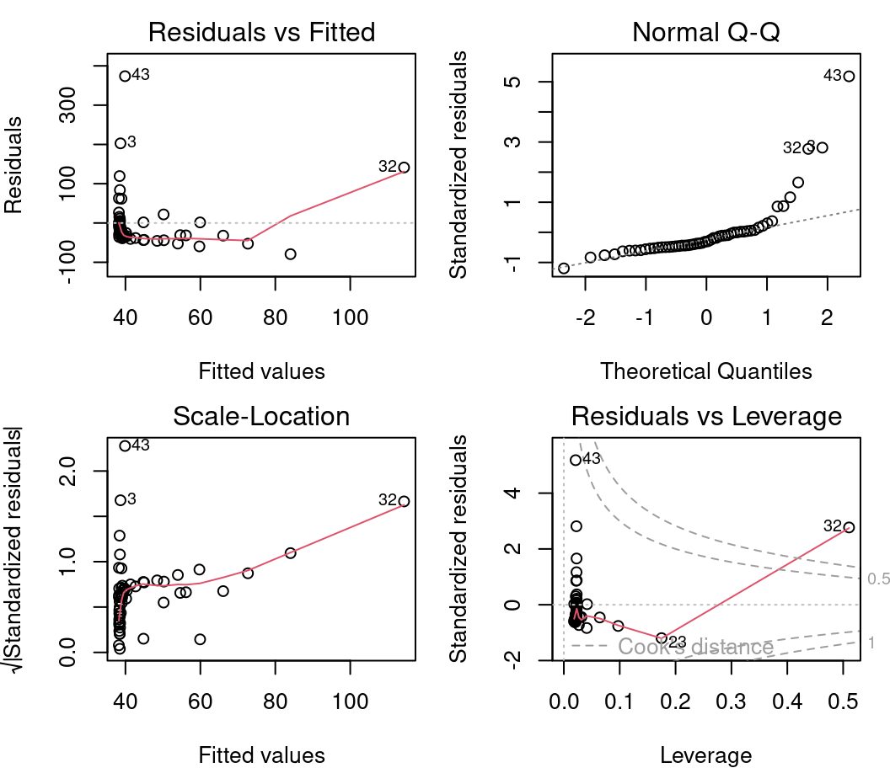
par() est une fonction qui permet de définir les paramètres du graphique. Ici, nous spécifions mfrow=c(2,2) qui permet d’afficher une grille de 2 x 2 graphiques à la fois. Finalement, plot()produit les graphiques.
Pour afficher une seule figure (parcelle) à la fois, nous pouvons spécifier
par(mfrow=1).
4.2.2.1 Graphique #1 - Résidus vs valeurs prédites
Le premier graphique nous informe de la distribution des résidus en fonction des valeurs prédites par le modèle de régression linéaire. Chaque point représente la distance entre la variable réponse et la réponse prédite par le modèle. Il nous informe sur l’indépendance des résidus et sur leur distribution. Il faut se rappeler qu’avec la régression linéaire, nous avons besoin d’une distribution uniforme des résidus (condition d’homoscédasticité).
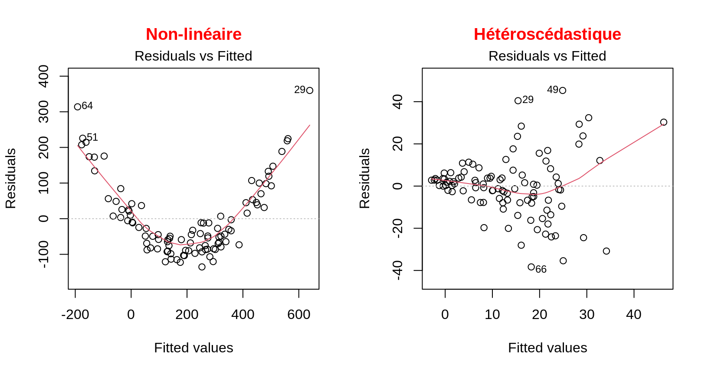
Sur l’axe des y nous retrouvons les résidus \(\epsilon_i\) et sur l’axe des x les valeurs prédites \(\hat{y_i} = \beta_0 + \beta_1 \times x_i\).
Dans une situation idéale, la dispersion des points ne présente pas de patron.
- Si les résidus sont dispersés de façon aléatoire autour de la ligne de 0, la relation est linéaire et la moyenne des résidus est 0.
- Si les résidus forment une bande horizontale approximative autour de la ligne de 0, la variance des résidus est homogène (donc, ils sont homoscédastiques).
- Si les résidus sont organisés en forme d’entonnoir, les résidus ne sont pas homoscédastiques.
Alerte ! Il faut être alerté si la distribution des points est non-linéaire comme dans ces deux exemples :
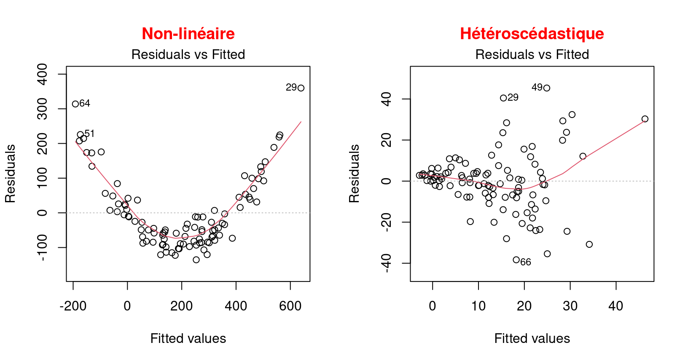
Ces exemples présentent une relation non linéaire et un exemple d’hétéroscédasticité qui est l’opposé de l’homoscédasticité, ce qui signifie que la condition de normalité est n’est pas respectée.
Dans cette situation, il faut plutôt utiliser un modèle linéaire généralisé (MLG) qui permet d’autres distributions (Poisson, binomial, binomial négatif, etc.) ou essayer de transformer la variable réponse et/ou les prédicteurs.
4.2.2.2 Graphique #2 - Échelle localisée
Le deuxième graphique diagnostique permet de vérifier si la dispersion des résidus augmente pour une valeur prédite donnée (i.e. si la dispersion des résidus est causée par la variable explicative). Si la dispersion augmente, la condition de base d’homoscédasticité n’est pas respectée.
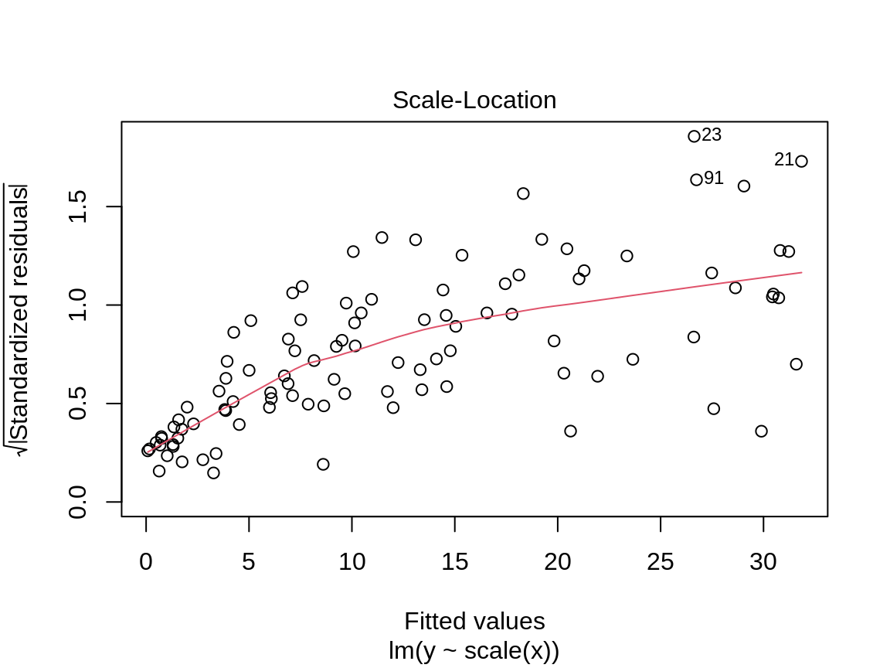
Sur l’axe des y nous retrouvons la racine carrée des résidus standardisés \(\sqrt{\frac{\epsilon_i}{\sigma}}\) et sur l’axe des x les valeurs prédites \(\hat{y_i} = \beta_0 + \beta_1 \times x_i\).
Nous recherchons ici aussi une dispersion des points sans patron, donc un prédicteur distribué de manière égale.
Alerte ! Il faut être méfiant si la distribution des points présente une tendance marquée :

Dans une situation comme celle-ci, nous ne pouvons nous fier aux résultats de modèle et devons plutôt essayer d’utiliser un modèle linéaire généralisé (MLG) qui permet d’autres distributions (Poisson, binomial, binomial négatif, etc.) ou de transformer la variable réponse et/ou les prédicteurs.
4.2.2.3 Graphique #3 - Normal QQ
Le troisième graphique présente la distribution des résidus. Avec ce graphique quantile-quantile, nous pouvons évaluer la normalité des résidus. Ce graphique compare la distribution de probabilité des résidus du modèle à une distribution de probabilité de données normales.
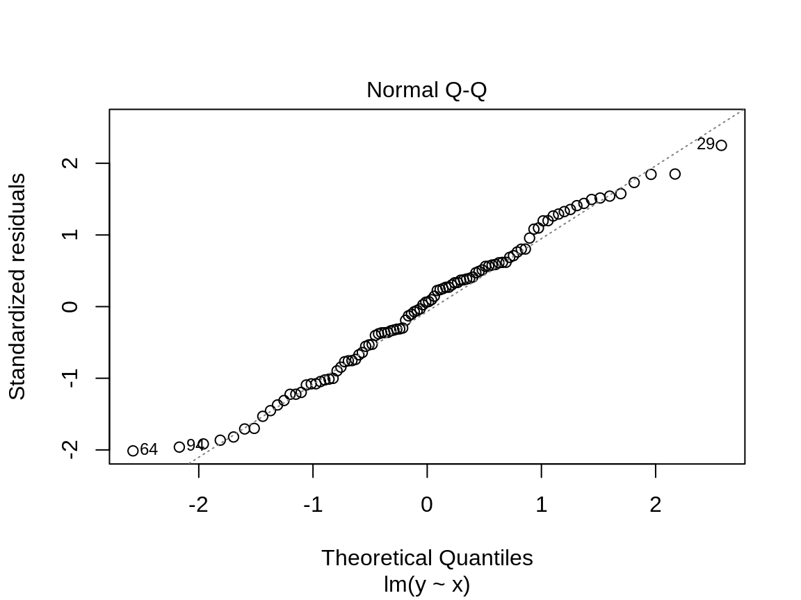
Sur l’axe des y nous retrouvons les résidus standardisés \(\frac{\epsilon_i}{\sigma}\) et sur l’axe des x les quantiles d’une distribution normale standard \(\mathcal{N}(0, \sigma^2)\).
Nous voulons voir les résidus standardisés sont près de la ligne 1:1. Ainsi, les résidus peuvent être considérés comme normalement distribués.
Alerte ! Il faut être méfiant si la distribution des points ne suit pas la ligne 1:1 :
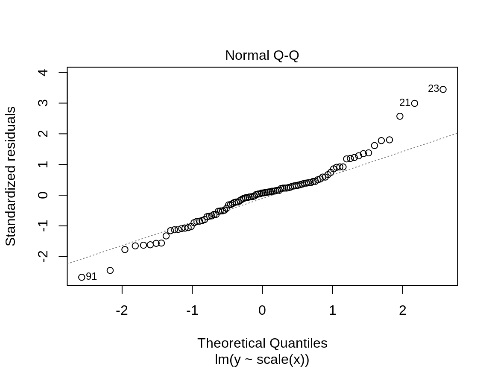
Dans ce cas-ci, les points ne sont pas bien alignés sur la droite, ce qui suggère que les résidus ne sont pas distribués normalement. Il faut plutôt essayer d’utiliser un modèle linéaire généralisé (MLG) qui permet d’autres distributions (Poisson, binomial, binomial négatif, etc.) ou de transformer la variable réponse et/ou les prédicteurs.
4.2.2.4 Graphique #4 - Résidus vs effet de levier
Ce dernier graphique diagnostique présente les résidus et leur influence. Il permet de déterminer si certaines observations ont une forte influence. Bien que nous ne testons pas un test de condition de base, la présence de points avec une forte influence peut influencer notre interprétation des données. Si une ou certaines observations sont aberrantes (donc, si elles ont des valeurs très différentes des autres), le modèle peut être mal ajusté en raison de leur influence exagérée sur l’estimation du modèle.
Le graphique des résidus vs effet de levier présente les points de levier qui sont des observations extrêmes du prédicteur et leur influence sur la régression. L’influence est quantifiée par la distance Cook. Une distance supérieure à 0,5 est problématique.
Exemple d’effet de levier et d’influence
Il ne s’agit pas ici de graphiques diagnostiques, mais de figures qui illustrent les concepts d’effet de levier et d’influence.
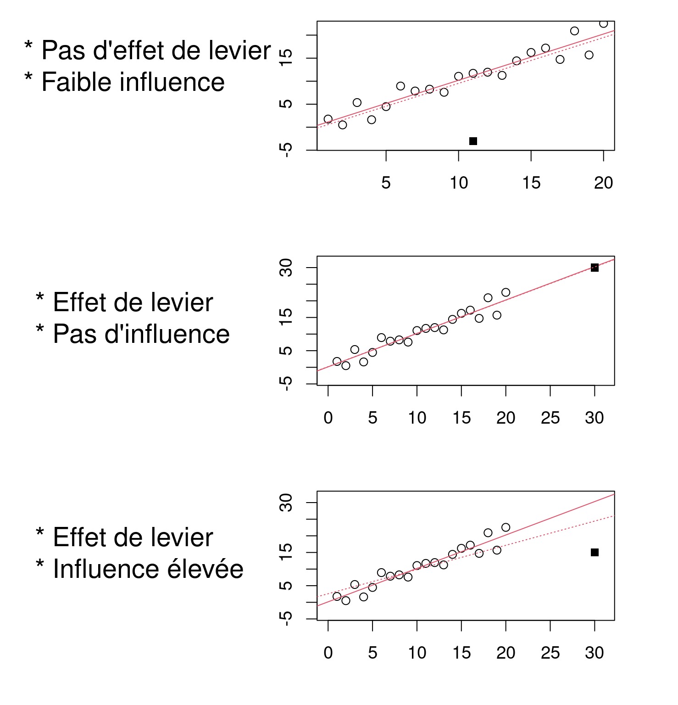
Sur l’axe des y nous retrouvons la réponse et le prédicteur sur l’axe des x.
Le modèle ne devrait pas pas dépendre fortement d’observations isolées. Une influence élevée de points de levier cause le modèle à passer près des points de levier, car ils manquent d’observations voisines.
Graphique #4
Le graphique diagnostique présente Sur l’axe des y les résidus standardisés \(\frac{\epsilon_i}{\sigma}\) et l’effet de levier sur l’axe des x. La ligne pointillée rouge marque la distance de Cook de 0,5.
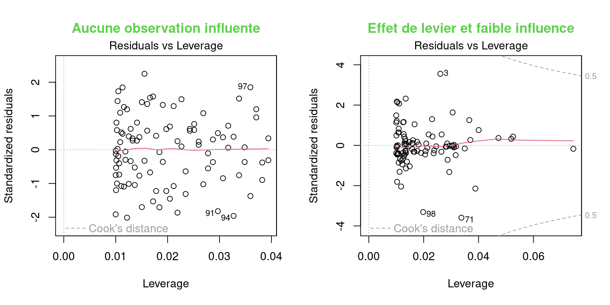
Nous voulons observer des résidus se situant à l’intérieur des lignes pointillées marquant la distance de Cook de 0,5.
Alerte ! Il faut être méfiant si un ou des points se trouvent à l’extérieur de la ligne pointillée :
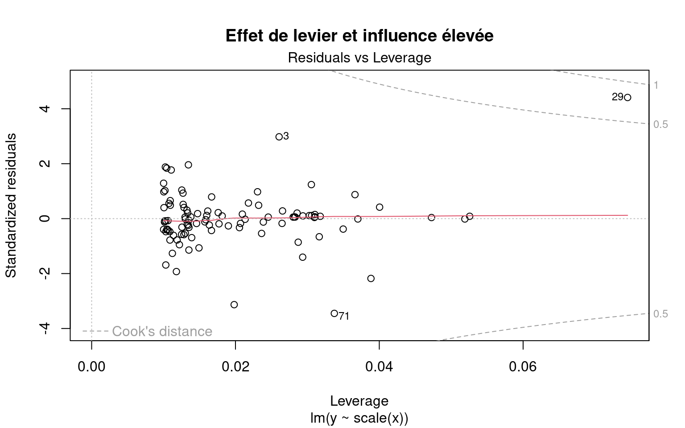
Le 29 a un effet de levier et une distance de Cook de plus de 0,5. Il correspond à une donnée aberrante. Il ne faut cependant jamais supprimer les valeurs aberrantes sans avoir de bonnes raisons de le faire ! Si (et seulement si!) ces observations correspondent à des erreurs de mesure ou à des exceptions, elles peuvent être retirées du jeu de données.
4.2.3 Étape 2. Vérifier les conditions d’application pour lm1
Le modèle lm1 respecte-t-il les conditions du modèle linéaire ?
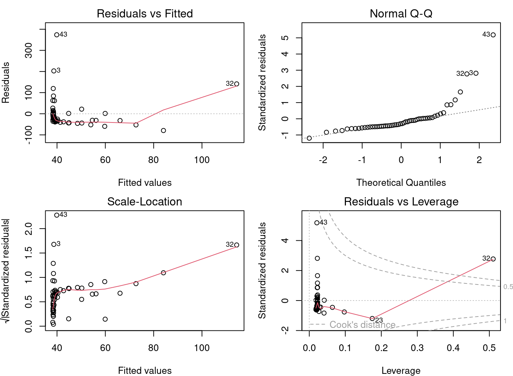
En se basant sur les connaissances acquises dans les sections précédentes, ces graphiques diagnostiques présentent de sérieux problèmes. * Les graphiques 1 et 2 présentent de fortes tendances, * Le graphique 3 montre que les résidus ne suivent pas une distribution normale, * Le graphique 4 met en évidence l’effet levier du point 32 et de son influence très élevée.
4.2.4 Conditions non respectées - Quelle est la cause ?
Pour comprendre la source des problèmes du modèle linéaire, traçons le modèle avec les observations :
# Graphique du modèle et des observations
par(mfrow = c(1, 2))
coef(lm1) # constante et pente## (Intercept) Mass
## 38.16645523 0.01438562plot(MaxAbund ~ Mass, data = bird) # graphique à gauche
abline(lm1) # ligne définie par les paramètres du modèle
hist(residuals(lm1)) # graphique à droite : distribution des résidus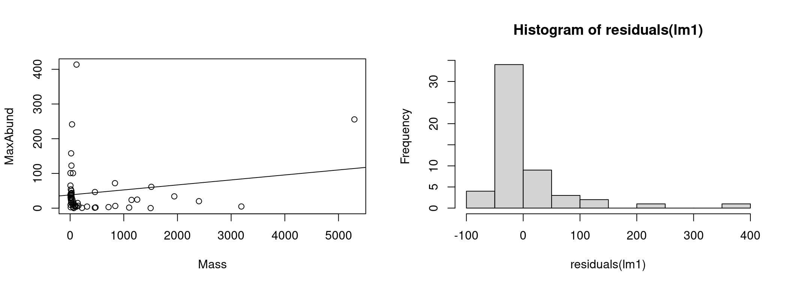
À gauche nous avons les données ainsi que la droite représentant l’estimation du modèle (MaxAbund ~ Mass). À gauche, la distribution des résidus.
Nous pouvons vérifier si les résidus suivent une distribution normale à l’aide d’un test de Shapiro-Wilk et d’un test d’asymétrie (skewness) :
# Test de la normalité des résidus
shapiro.test(residuals(lm1))##
## Shapiro-Wilk normality test
##
## data: residuals(lm1)
## W = 0.64158, p-value = 3.172e-10# Test d'asymétrie
library(e1071)
skewness(residuals(lm1))## [1] 3.154719Le test de Shapiro-Wilk compare la distribution des données observées à une distribution normale. Les données observées peuvent être considérées comme normalement distribuées lorsque la valeur de p calculée par le test de Shapiro-Wilk est supérieure au seuil de significativité α (généralement 0.05). Ici, la valeur de p (p-value) retournée indique une distribution significativement différente d’une normale.
Le test d’asymétrie mesure le décalage des résidus. Une valeur positive représente un décalage vers la gauche et une valeur négative un décalage vers la droite. Ici, la valeur positive d’asymétrie indique que la distribution est décalée vers la gauche.
4.2.5 Conditions non respectées - Comment procéder ?
Clairement, les conditions d’application du modèle linéaire lm1 ne sont pas respectées. Nous ne pouvons donc pas nous fier aux résultats du modèle. Il faut se tourner vers une autre alternative et il y a deux options lorsque les conditions d’application du modèle linéaire ne sont pas respectées.
Utiliser un autre type de modèle
Les ateliers R 6 à 8 du CSBQ explorent d’autres modèles qui pourraient être mieux adaptés à l’hypothèse et aux données.
Transformer les données
Il est également possible de modifier ses données, que ce soit la variable réponse ou les prédicteurs. Plusieurs types de transformations sont possibles et leur utilité dépend de la distribution de la variable et du type de modèle. Cependant, la modification des variables est souvent délicate en pratique. La transformation peut régler certains problèmes, mais peut en créer d’autres.
Il est à noter que les résultats des tests de signification sur les données transformées ne sont pas automatiquement valables pour les données non transformées.
4.2.5.1 Défi 1: Un modèle sur variables transformées
Notre modèle présente de sérieux problèmes. Essayons une transformation logarithmique pour voir si ça peut corriger la situation.
Premièrement, transformez données et exécutez une nouvelle régression linéaire sur ces données. Par la suite, vérifiez le respect des conditions d’application du nouveau modèle en utilisant les graphiques diagnostiques.
Étape 1
Débutons par la transformation des données de notre jeu de données :
# Transformation logarithmique des données
bird$logMaxAbund <- log10(bird$MaxAbund)
bird$logMass <- log10(bird$Mass)Avec ces données logMaxAbund et logMass transformées, nous exécutons une nouvelle régression linéaire et sauvegardons l’objet du modèle sous lm2.
# Modèle linéaire sur les données transformées
lm2 <- lm(logMaxAbund ~ logMass, data = bird)Nous pouvons observer que les paramètres s’alignent avec notre prédiction. C’est-à-dire, que le coefficient logMass est négatif et donc que l’abondance décroit avec la masse de l’espèce. Cependant, il faut encore vérifier conditions d’application du modèle pour s’assurer de la validité des résultats.
Étape 2
Vérifions les conditions pour lm2 en utilisant les graphiques diagnostiques.
# Graphiques diagnostiques
par(mfrow = c(2, 2), mar = c(3, 4, 1.15, 1.2))
plot(lm2)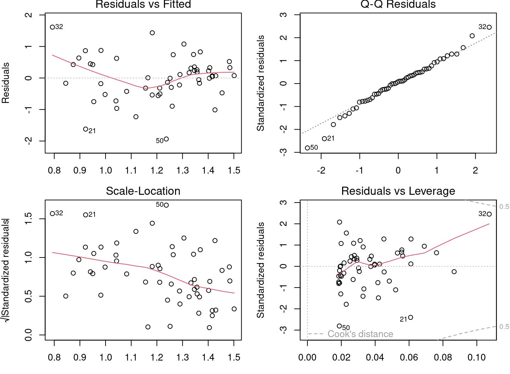
Les graphiques diagnostiques semblent beaucoup mieux, mais il reste des problèmes. Certains graphiques présentent encore des tendances marquées. Traçons le modèle avec les observations :
# Graphique du modèle et des observations
par(mfrow = c(1, 2))
coef(lm2) # constantes et pente## (Intercept) logMass
## 1.6723673 -0.2361498plot(logMaxAbund ~ logMass, data = bird) # graphique à gauche
abline(lm2) # ligne définie par les paramètres du modèle
hist(residuals(lm2)) # graphique à droite : distribution des résidus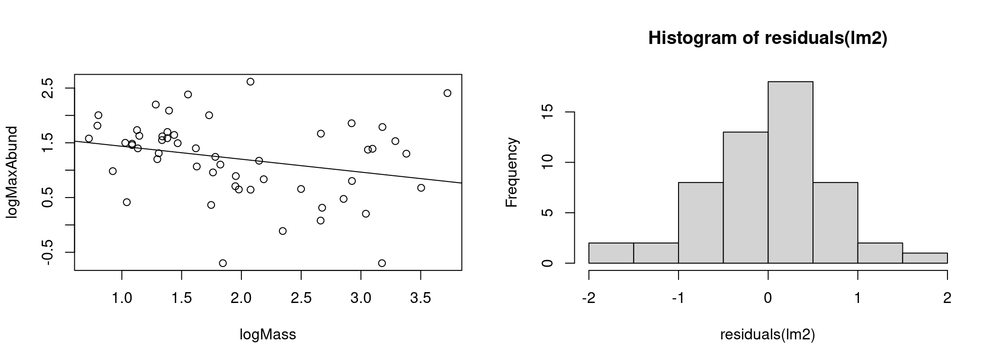
Le modèle semble mieux expliquer les données et la distribution des résidus s’est beaucoup rapprochée de la distribution normale.
4.2.6 Étape 3. Analyser les paramètres
La dernière étape d’une régression linéaire avec R est de vérifier les paramètres du modèle. Nous utilisons alors la commande summary() pour obtenir plus d’informations sure le modèle ajusté.
# Paramètres du modèle ajusté
summary(lm2)
Call:
lm(formula = logMaxAbund ~ logMass, data = bird)
Residuals:
Min 1Q Median 3Q Max
-1.93562 -0.39982 0.05487 0.40625 1.61469
Coefficients:
Estimate Std. Error t value Pr(>|t|)
(Intercept) 1.6724 0.2472 6.767 1.17e-08 ***
logMass -0.2361 0.1170 -2.019 0.0487 *
---
Signif. codes: 0 '***' 0.001 '**' 0.01 '*' 0.05 '.' 0.1 ' ' 1
Residual standard error: 0.6959 on 52 degrees of freedom
Multiple R-squared: 0.07267, Adjusted R-squared: 0.05484
F-statistic: 4.075 on 1 and 52 DF, p-value: 0.04869La sortie de summary() présente plusieurs valeurs :
1. Coefficients : Estimations des paramètres et leur écart type
2. Pr(>|t|) : Résultats d’un test de t visant à déterminer si les paramètres sont différents de 0
3. Adjusted R squared (R au carré ajusté) : Dans quelle mesure le modèle explique-t-il les données ?
4. F-statistic (statistique F) (ANOVA) : Le modèle est-il significativement différent d’un modèle sans prédicteur (modèle nul) ?
Nous aborderons dans la prochaine section les Tests de T et l’ANOVA. Nous pouvons cependant déjà en dégager que notre modèle n’est que marginalement meilleur que le modèle nul.
Avec l’objet lm2, nous pouvons aussi extraire les paramètres du modèle et les autres résultats :
# Vecteurs de résidus et valeurs prédites
e <- residuals(lm2)
y <- fitted(lm2)
coefficients(lm2) # coefficients## (Intercept) logMass
## 1.6723673 -0.2361498summary(lm2)$coefficients # coefficients avec test de t## Estimate Std. Error t value Pr(>|t|)
## (Intercept) 1.6723673 0.2471519 6.766557 1.166186e-08
## logMass -0.2361498 0.1169836 -2.018658 4.869342e-02summary(lm2)$adj.r.squared # R au carré ajusté## [1] 0.054836964.3 Interprétation du modèle
L’interprétation du modèle est l’étape finale lorsque nous obtenons un modèle qui respecte les conditions d’application. L’interprétation est l’évaluation de l’appui du modèle pour l’hypothèse. Bref, nous répondons à la question: Dans quelle mesure le modèle soutient notre hypothèse ?
Hypothèse
Pour différentes espèces d’oiseaux, la masse moyenne d’un individu a un effet sur l’abondance maximale de l’espèce, en raison de contraintes écologiques (sources de nourriture, disponibilité de l’habitat, etc.).
# Sommaire du modèle linéaire avec les données
# log-transformées
summary(lm2)
Call:
lm(formula = logMaxAbund ~ logMass, data = bird)
Residuals:
Min 1Q Median 3Q Max
-1.93562 -0.39982 0.05487 0.40625 1.61469
Coefficients:
Estimate Std. Error t value Pr(>|t|)
(Intercept) 1.6724 0.2472 6.767 1.17e-08 ***
logMass -0.2361 0.1170 -2.019 0.0487 *
---
Signif. codes: 0 '***' 0.001 '**' 0.01 '*' 0.05 '.' 0.1 ' ' 1
Residual standard error: 0.6959 on 52 degrees of freedom
Multiple R-squared: 0.07267, Adjusted R-squared: 0.05484
F-statistic: 4.075 on 1 and 52 DF, p-value: 0.04869Le modèle lm2 ne présente que très peu preuves à l’appui de l’hypothèse. En regardant les paramètres du modèle comme nous l’avons vu précédemment, nous observons que le modèle explique peu de la réponse.
Le faible R au carré ajusté indique qu’une faible partie de la variance de la variable réponse est expliquée par le modèle. La masse n’explique qu’une petite fraction de l’abondance des espèces.
Le F-test est à peine significatif ce qui indique que le modèle n’est que légèrement meilleur qu’un modèle sans variables prédictives.
Finalement, la taille d’effet estimé (le coefficient) du paramètre logMass est très près de zéro et n’est que marginalement significative, c’est-à-dire qu’une augmentation ou une diminution de la masse des espèces n’entraine quasiment pas de changement dans leur abondance.
Les résultats ne sont pas à la hauteur de ce que nous aimerions, peut-être devrions-nous formuler une hypothèse plus précise ?
4.3.1 Trouver un meilleur modèle: oiseaux terrestres
Formulons une nouvelle hypothèse plus précise. Cette fois, concentrons-nous seulement sur les oiseaux terrestres. L’abondance des oiseaux aquatiques ne répond peut-être pas de la même façon à la masse que les oiseaux terrestres.
Nouvelle hypothèse
Pour différentes espèces d’oiseaux terrestres, la masse moyenne d’un individu a un effet sur l’abondance maximale de l’espèce, en raison de contraintes écologiques (sources de nourriture, disponibilité de l’habitat, etc.).
Nous pouvons maintenant ajuster le modèle linéaire pour exclure les oiseaux aquatiques. Il suffit :
# Modèle linéaire avec oiseaux terrestres
lm3 <- lm(logMaxAbund ~ logMass, data = bird, subset = !bird$Aquatic)
# exclut les oiseaux aquatiques (!birdsAquatic == TRUE) ou
# de façon équivalente : lm3 <- lm(logMaxAbund~logMass,
# data=bird, subset=bird$Aquatic == 0)
# Sortie du modèle
lm3##
## Call:
## lm(formula = logMaxAbund ~ logMass, data = bird, subset = !bird$Aquatic)
##
## Coefficients:
## (Intercept) logMass
## 2.2701 -0.6429Et vérifions les conditions d’application du modèle :
par(mfrow = c(2, 2))
plot(lm3)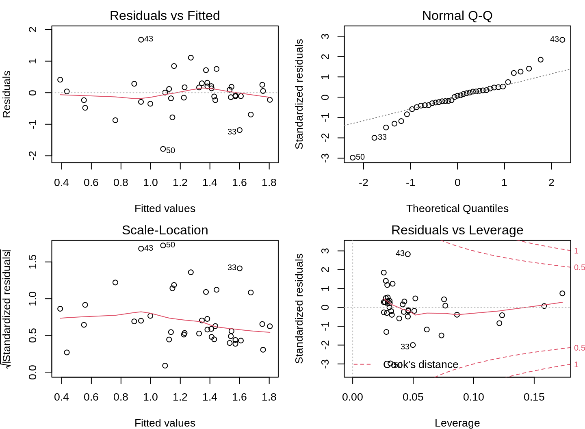
Au vu des graphiques diagnostiques, nous pouvons conclure qu les conditions d’application sont respectées !
Finalement, le modèle fournit des preuves à l’appui de notre hypothèse :
summary(lm3)
Call:
lm(formula = logMaxAbund ~ logMass, data = bird, subset = !bird$Aquatic)
Residuals:
Min 1Q Median 3Q Max
-1.78289 -0.23135 0.04031 0.22932 1.68109
Coefficients:
Estimate Std. Error t value Pr(>|t|)
(Intercept) 2.2701 0.2931 7.744 2.96e-09 ***
logMass -0.6429 0.1746 -3.683 0.000733 ***
---
Signif. codes: 0 '***' 0.001 '**' 0.01 '*' 0.05 '.' 0.1 ' ' 1
Residual standard error: 0.6094 on 37 degrees of freedom
Multiple R-squared: 0.2682, Adjusted R-squared: 0.2485
F-statistic: 13.56 on 1 and 37 DF, p-value: 0.000733Le R au carré ajusté est de 0,25, ce qui indique que le modèle est raisonnablement bien ajusté aux données. Le modèle est bien meilleur qu’un modèle sans variables prédictives. Le F-test est significatif (< 0.05). Le T-test montre que l’estimation du paramètre “logMass” est clairement différente de 0 (t-test) et que la masse a un effet sur l’abondance des espèces.
4.4 Défi 2
Pour le deuxième défi, rassemblons toutes les étapes et essayons avec de nouvelles données :
- Formuler une autre hypothèse similaire sur l’abondance maximale et la masse moyenne d’un individu, cette fois pour les passereaux (“passerine birds”).
- Ajuster un modèle pour évaluer cette hypothèse, en utilisant les variables transformées (c’est-à-dire
logMaxAbundetlogMass). Sauvegarder le modèle sous le nom delm4. - Vérifier les conditions d’application du modèle linéaire à l’aide des graphiques diagnostiques.
- Interpréter les résultats : Le modèle fournit-il des preuves à l’appui de l’hypothèse ?
Indice : Comme les espèces aquatiques, les passereaux (variable
Passerine) sont codées 0/1 (vérifier avecstr(bird))
4.4.1 Solutions
Hypothèse
Pour différentes espèces de passereaux, la masse moyenne d’un individu a un effet sur l’abondance maximale de l’espèce, en raison de contraintes écologiques (sources de nourriture, disponibilité de l’habitat, etc.).
Ajuster le modèle
# Modèle linéaire pour les passeraux
lm4 <- lm(logMaxAbund ~ logMass, data = bird, subset = bird$Passerine ==
1)
lm4##
## Call:
## lm(formula = logMaxAbund ~ logMass, data = bird, subset = bird$Passerine ==
## 1)
##
## Coefficients:
## (Intercept) logMass
## 1.2429 0.2107Vérifier les conditions d’application
par(mfrow = c(2, 2))
plot(lm4)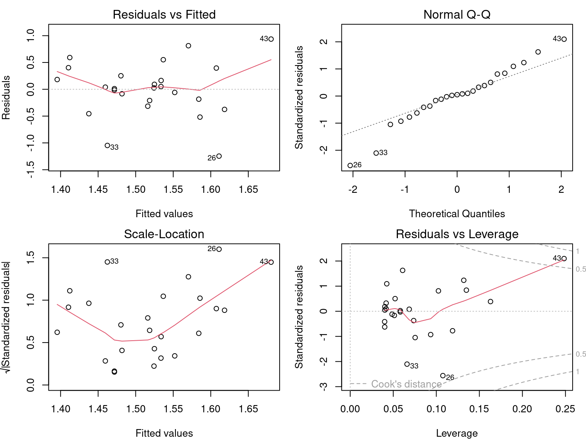
Vaut-il la peine d’interpréter les résultats ?
summary(lm4)
Call:
lm(formula = logMaxAbund ~ logMass, data = bird, subset = bird$Passerine ==
1)
Residuals:
Min 1Q Median 3Q Max
-1.24644 -0.20937 0.02494 0.25192 0.93624
Coefficients:
Estimate Std. Error t value Pr(>|t|)
(Intercept) 1.2429 0.4163 2.985 0.00661 **
logMass 0.2107 0.3076 0.685 0.50010
---
Signif. codes: 0 '***' 0.001 '**' 0.01 '*' 0.05 '.' 0.1 ' ' 1
Residual standard error: 0.5151 on 23 degrees of freedom
Multiple R-squared: 0.02, Adjusted R-squared: -0.02261
F-statistic: 0.4694 on 1 and 23 DF, p-value: 0.5001Les résultats du modèle ne doivent pas être interprétés, car les conditions d’application du modèle linéaire ne sont pas respectées!
4.5 Régression linéaire avec R
Effectuer une régression linéaire avec R se découpe en trois étapes:
- Formuler et exécuter un modèle linéaire basé sur une hypothèse
- Vérifier les conditions d’application du modèle linéaire
- Examiner la sortie du modèle et si les conditions sont respectées
- Analyser les paramètres de régression
- Tracer le modèle
- Effectuer des tests de signification sur les estimations des paramètres (si nécessaire)
Nous allons explorer chaque étape dans les sections suivantes.
Aussi, dans le cas où les conditions ne sont pas respectées, nous verrons qu’il est possible d’envisager l’utilisation d’un Modèle linéaire généralisé (GLM) ou la transformation des données.
4.6 Noms de variables
Des termes différents sont utilisés pour la réponse et le prédicteur, en fonction du contexte et du domaine scientifique. Les termes ne sont pas toujours synonymes. Voici deux tableaux pour vous éclairer sur le jargon que vous rencontrerez.
| résponse | prédicteur |
|---|---|
| var. expliqué | var. explicatif |
| covariable | |
| var. endogène | var. exogène |
| var. dépendante | var. indépendante |
| response | predictor |
|---|---|
| explanatory var. | |
| covariate | |
| outcome | |
| output var. | input var. |
| dependent var. | independent var. |